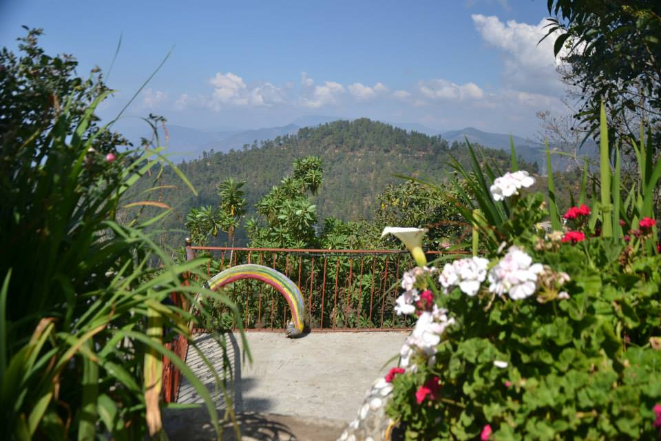
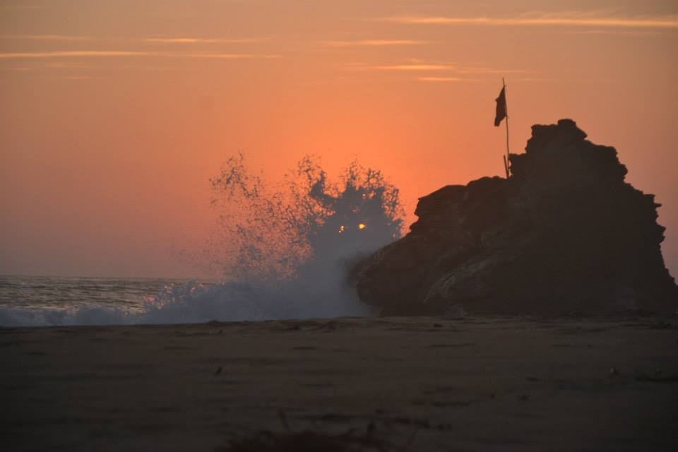

LE MEXIQUE
Eloigné de près de 9200km, ce pays est extremement agréable a visiter.
Je suis arrivé dans la premiere ville aprés un an de préparetion (oui, un an! Mais quatre mois de voyage a l'autre bout du monde ne ce prépare pas en deux jours)
voici la liste des principales villes que j'ai visité:
-
Cancun
Ville connue mondialement pour ses plages de rêve, ses springbreak. C'est par ici que j'suis arrivé
-
Valladolid
Première Cenote et premier gros kiff
-
Merida
La ville au chapeau, tout les artisants du coin en fabriquent
-
Mexico city
Plus connue sous le patronyme D.F (à prononcer dè.fè) elle est la capitale de ce pays
-
San josé del Pacifico
Un petit village perché a plus de 3000m d'altitude, Un veritable bol d'air pur.
 -
Mazunté / Zippolite
Ces deux petite villes ne sont séparées que par une petite colline et dix minutes de marche
 -
Téotihuacan
Mon tout premier site archéologique sur les civilisation amérindienne